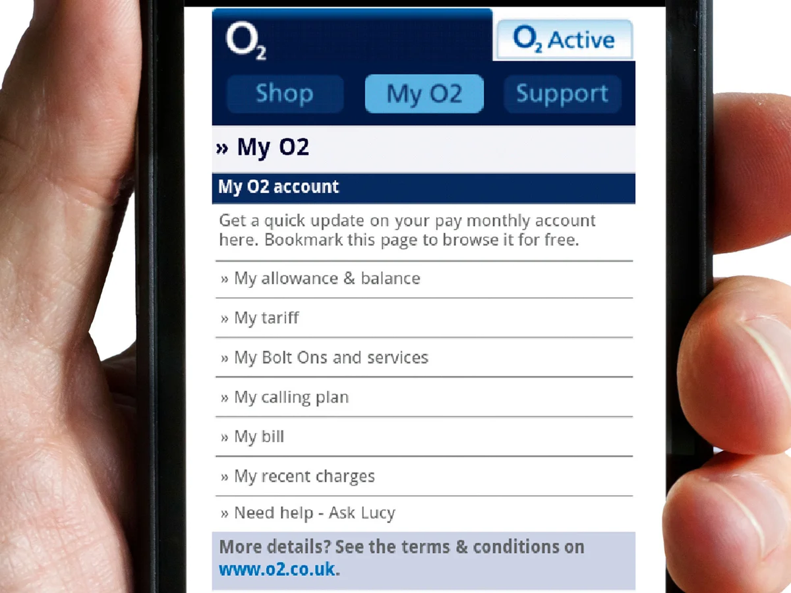

| A pay monthly contract phone are contracts that you sign to pay out for your phone over an agreed period of time with including the cost of a new handset with a monthly allowance of data, minutes and texts. People usually go for contracts based off if they want the latest model of a phone but would rather not buy a brand-new phone outright. |
| Pros of using contract include: Spread the cost of your new handset over a time frame, extra benefits and discounts when you sign up, built up your credit rating the longer you have your contract. |
| Information about SIM only |
| Pros and cons about SIM only |